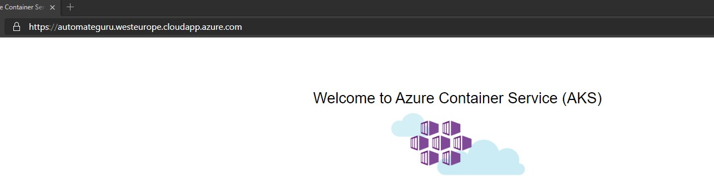
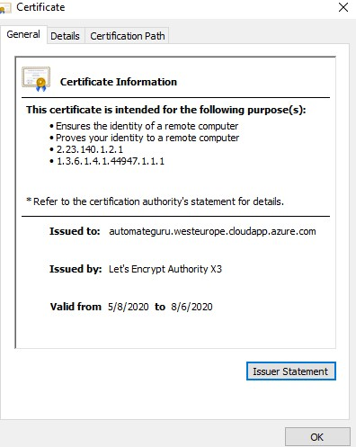

Automatic certificate generation for Azure Kubernetes Service

For all administrators which are taking care of web application support, certificates management is very annoying task. If you have reminder for that it's not a problem, however in many cases admins simply forgot to update it on time. In this post I will try to show you how to automate certificate generation and assignmnet process for Azure Kubernetes Service using certmanager, Let's Encrypt and Azure DevOps YAML pipelines about which I wrote in my previous article. If you didn't read it yet, strongly recommend to do that.
Why certificate on Azure Kubernetes Service?
Nowadays Kubernetes become more and more popular solution for web application. Companire are still a little bit afraid about using Platform as a Service solution in Cloud and preffer to use containers instead of it. For IT specialist containarization can be in some cases a little bit complicated, especially if they were not familiar in the past with Linux.
To have secured connection between client and application stored on Azure Kubernetes Service or other container orchestrator, application must have in the front SSL certificate assigned in same way as web application stored on any other standard service. In AKS we will use Nginx Ingress for that
How the process for certificate automation should looks like?
Our main deployment pipeline will process in following way: 1. Helm tool installation 2. Configuration of custom namespace in AKS (In our case it will be ingress-basic) 3. Adding Nginx to repository 4. Installation of Nginx Ingress 5. Installation of custom resource of cert manager in version 0.13 6. Adding jetstack (certmanager) package to repository 7. Certmanager installation 8. Cluster issuer configuration on AKS 9. Applying Demo "Hello world" application 10. Certificate creation and assignment to Nginx Ingress
But before main configuration let's check requirements which should be configured first.
Prerequisites
- First off all you must have AKS cluster ready.
- Service connection and environment should be configured to access DevOps (described how it should be done in Multi-stage YAML pipeline post).
- Create public IP using below Azure CLI command - it should be created in same resource group as AKS cluster nodes.
az network public-ip create --resource-group MC_myResourceGroup_myAKSCluster_eastus --name myAKSPublicIP --sku Standard --allocation-method static --query publicIp.ipAddress -o tsv
Once public IP is created you can add DNS name for it directly in Azure portal.
Public IP
4. Configure Variable group in Azure DevOps library with variables like on below picture (in my example it's only done for TEST environment but you can expand it as you want). Values for those variables should be taken from point 2 and 3.
 5. Configure access for Azure DevOps service connection to AKS by providing specific permission - in our case it will be cluster admin but you can limit it. Create role.yaml file as below and later deploy it using Az CLI and kubectl commands.
5. Configure access for Azure DevOps service connection to AKS by providing specific permission - in our case it will be cluster admin but you can limit it. Create role.yaml file as below and later deploy it using Az CLI and kubectl commands.
{kind=link}
apiVersion: rbac.authorization.k8s.io/v1
kind: ClusterRoleBinding
metadata:
name: cluster-admins
roleRef:
apiGroup: rbac.authorization.k8s.io
kind: ClusterRole
name: cluster-admin
subjects:
- kind: Group
name: system:serviceaccounts
apiGroup: rbac.authorization.k8s.io
az login
az account set --subscription "SUBSCRIPTION-NAME"
az aks get-credentials --name aks-cluster --resource-group aks-resource-group
kubectl -f role.yaml
Now is time for real meat!
Once all prerequistes are configured we can start configuration of code.
Cluster issuer configuration.
Our first yaml file will contain defintion of cluster issuer. In our case we will use Let's encrypt server for signing certificate. All supprted certificate issuers can be found on certmanager webpage.
Create file called certificate-cluster-issuer.yaml paste content provided below and adjust your mail address.
apiVersion: cert-manager.io/v1alpha2
kind: ClusterIssuer
metadata:
name: letsencrypt
spec:
acme:
server: https://acme-v02.api.letsencrypt.org/directory
email: your@mail.com
privateKeySecretRef:
name: letsencrypt
solvers:
- http01:
ingress:
class: nginx
Deploy hello world application to your AKS cluster
To deploy appliaction we will use demo application from public image, but if you want you can create custom one. Copy content below and paste it to file aks-helloworld.yaml.
apiVersion: apps/v1
kind: Deployment
metadata:
name: aks-helloworld
spec:
replicas: 1
selector:
matchLabels:
app: aks-helloworld
template:
metadata:
labels:
app: aks-helloworld
spec:
containers:
- name: aks-helloworld
image: neilpeterson/aks-helloworld:v1
ports:
- containerPort: 80
env:
- name: AUTOMATEGURU
value: "Welcome to AUTOMATE.GURU Azure Kubernetes Service (AKS)"
---
apiVersion: v1
kind: Service
metadata:
name: aks-helloworld
spec:
type: ClusterIP
ports:
- port: 80
selector:
app: aks-helloworld
Configure Ingress for custom domain and certificate
Ingress controller needs a defintion of DNS and certificate to know exactly from which adress it should be available. As you see below our domain has been set to automateguru.westeurope.cloudapp.azure.com and it has been assigned to public IP created as a prerequiste. Certificate (secret name) is taken from tls-secret which will created in next step. As a backend we defined aks-helloworld service to point to our demo application. Below yaml should be created as ingress-assign-certificate-test.yaml file.
apiVersion: extensions/v1beta1
kind: Ingress
metadata:
name: hello-world-ingress
annotations:
kubernetes.io/ingress.class: nginx
cert-manager.io/cluster-issuer: letsencrypt
nginx.ingress.kubernetes.io/rewrite-target: /$1
spec:
tls:
- hosts:
- automateguru.westeurope.cloudapp.azure.com
secretName: tls-secret
rules:
- host: automateguru.westeurope.cloudapp.azure.com
http:
paths:
- backend:
serviceName: aks-helloworld
servicePort: 80
path: /(.*)
Certificate configuration
Now we need to define configuration for our certificate. In spec section we should provide name of the secret in which certificate will be stored - it's configured in ingress-assign-certificate-test.yaml so keep it in mind that if you want to change the name it should be changed there as well. As a dnsNames we should provide public DNS name of our application. In issuerRef we are providing name of the cluster issuer which was defined in file certificate-cluster-issuer.yaml. Once yaml is adjusted we are saving it as certificate-test.yaml file.
apiVersion: cert-manager.io/v1alpha2
kind: Certificate
metadata:
name: tls-secret
namespace: ingress-basic
spec:
secretName: tls-secret
dnsNames:
- automateguru.westeurope.cloudapp.azure.com
acme:
config:
- http01:
ingressClass: nginx
domains:
- automateguru.westeurope.cloudapp.azure.com
issuerRef:
name: letsencrypt
kind: ClusterIssuer
And the magic is in the pipeline definition
Once you created all yaml defintion you should create proper pipeline definition to automate whole process.
Keep in mind that we are doing deployment only in test environment, so if you want to automate it for more stages you must adjust it.
Configure deploy-to-all-stages.yaml file. Values of the variables are taken from Azure DevOps variable groups.
stages:
- template: deployment-stage.yaml
parameters:
STAGE_NAME: TEST
STAGE_ENVIRONMENT: $(TEST_ENVIRONMENT_NAME)
STAGE_K8S_SERVICE_ENDPOINT: $(TEST_CLUSTER_SERVICE_CONNECTION_NAME)
STAGE_PUBLIC_IP: $(PUBLICIP_TEST)
Main pipeline defintion should be stored in deployment-stage.yaml file. Whole process has been described in chapter How the process for certificate automation should looks like?
parameters:
STAGE_NAME: ''
STAGE_ENVIRONMENT: ''
STAGE_K8S_SERVICE_ENDPOINT: ''
STAGE_PUBLIC_IP: ''
stages:
- stage: ${{ parameters.STAGE_NAME }}
jobs:
- deployment: SetupCluster
pool:
vmImage: 'ubuntu-latest'
environment: ${{ parameters.STAGE_ENVIRONMENT }}
strategy:
runOnce:
deploy:
steps:
- task: DownloadPipelineArtifact@2
inputs:
artifactName: yaml
targetPath: $(Build.SourcesDirectory)/yaml
- task: HelmInstaller@1
inputs:
helmVersionToInstall: '3.2.0'
- task: Kubernetes@1
displayName: Configure ingress namespace
inputs:
connectionType: 'Kubernetes Service Connection'
kubernetesServiceEndpoint: ${{ parameters.STAGE_K8S_SERVICE_ENDPOINT }}
command: 'create'
arguments: 'namespace ingress-basic'
- task: Bash@3
displayName: "Repo add nginx"
inputs:
targetType: 'inline'
script: 'helm repo add stable https://kubernetes-charts.storage.googleapis.com/'
- task: HelmDeploy@0
displayName: Install Nginx
inputs:
connectionType: 'Kubernetes Service Connection'
kubernetesServiceEndpoint: ${{ parameters.STAGE_K8S_SERVICE_ENDPOINT }}
namespace: 'ingress-basic'
command: 'install'
chartType: 'Name'
chartName: 'stable/nginx-ingress'
arguments: '--set controller.replicaCount=1 --set controller.service.loadBalancerIP=${{ parameters.STAGE_PUBLIC_IP }} --set controller.nodeSelector."beta\.kubernetes\.io/os"=linux --set defaultBackend.nodeSelector."beta\.kubernetes\.io/os"=linux'
- task: Kubernetes@1
displayName: Create custom resources
inputs:
connectionType: 'Kubernetes Service Connection'
kubernetesServiceEndpoint: ${{ parameters.STAGE_K8S_SERVICE_ENDPOINT }}
command: 'apply'
arguments: '--validate=false -f https://raw.githubusercontent.com/jetstack/cert-manager/release-0.13/deploy/manifests/00-crds.yaml'
- task: Bash@3
displayName: "Repo add jetstack"
inputs:
targetType: 'inline'
script: 'helm repo add jetstack https://charts.jetstack.io'
- task: Bash@3
displayName: "Repo update"
inputs:
targetType: 'inline'
script: 'helm repo update'
- task: HelmDeploy@0
displayName: Install cert-manager
inputs:
connectionType: 'Kubernetes Service Connection'
kubernetesServiceEndpoint: ${{ parameters.STAGE_K8S_SERVICE_ENDPOINT }}
namespace: 'ingress-basic'
command: 'install'
chartType: 'Name'
chartName: 'jetstack/cert-manager'
arguments: '--version v0.13.0'
- task: Kubernetes@1
displayName: Apply cluster issuer
inputs:
connectionType: 'Kubernetes Service Connection'
kubernetesServiceEndpoint: ${{ parameters.STAGE_K8S_SERVICE_ENDPOINT }}
command: 'apply'
arguments: '-f $(Build.SourcesDirectory)/yaml/certificate-cluster-issuer.yaml'
- task: Kubernetes@1
displayName: Apply Hello World
inputs:
connectionType: 'Kubernetes Service Connection'
kubernetesServiceEndpoint: ${{ parameters.STAGE_K8S_SERVICE_ENDPOINT }}
namespace: 'ingress-basic'
command: 'apply'
arguments: '-f $(Build.SourcesDirectory)/yaml/aks-helloworld.yaml'
- task: Kubernetes@1
displayName: Ingress assign certificate
inputs:
connectionType: 'Kubernetes Service Connection'
kubernetesServiceEndpoint: ${{ parameters.STAGE_K8S_SERVICE_ENDPOINT }}
namespace: 'ingress-basic'
command: 'apply'
arguments: '-f $(Build.SourcesDirectory)/yaml/ingress-assign-certificate-${{ parameters.STAGE_NAME }}.yaml'
- task: Kubernetes@1
displayName: Create certificate
inputs:
connectionType: 'Kubernetes Service Connection'
kubernetesServiceEndpoint: ${{ parameters.STAGE_K8S_SERVICE_ENDPOINT }}
namespace: 'ingress-basic'
command: 'apply'
arguments: '-f $(Build.SourcesDirectory)/yaml/certificate-${{ parameters.STAGE_NAME }}.yaml'
We are ready for deployment!
If you configured everything correctly and already run your pipeline it's time to check if it's working.
Go to your web browser and navigate to your application address.
If you see screen similar like on above without any error probably it's working.
But to be 100% sure check certificate ;)

If something is not clear in this process, please leave a comment. Hope that we will be able to help you!